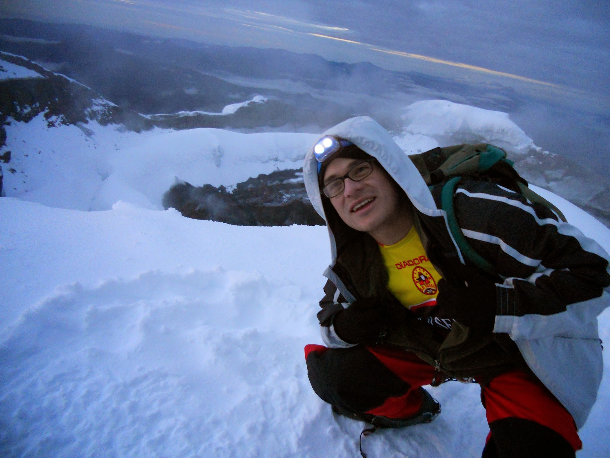

I am an epidemiology PhD student at UMass Amherst, studying the social impacts of gambling in Massachusetts, as well as working at the Reich Lab on infectious disease forecasting. My work on gambling pertains to qualitative and quantitative assessments of the effects of economic, social, and demographic traits on gambling harms in Massachusetts, as well as on the impacts of the newly built casinos on surrounding communities, and gambling habits across the state. My work with the Reich Lab is primarily in communication and outreach.
I am also a biochemist (BSc, McGill University) and medical doctor (MD, Universidad Internacional del Ecuador) born and raised in Quito, Ecuador, but I have lived in many countries including South Africa, Canada, North Macedonia, Nepal, and Guatemala. I have twin daughters who are twelve years old, and I now live in Amherst, Massachusetts. Beyond my academic training, I have worked in teaching and tutoring since high school, I have been employed in many labs doing bench science, I have practiced as a physician in resource poor settings, and work on community engagement and science communication to this day.
Some additional facts about me:
R for the majority of my work.